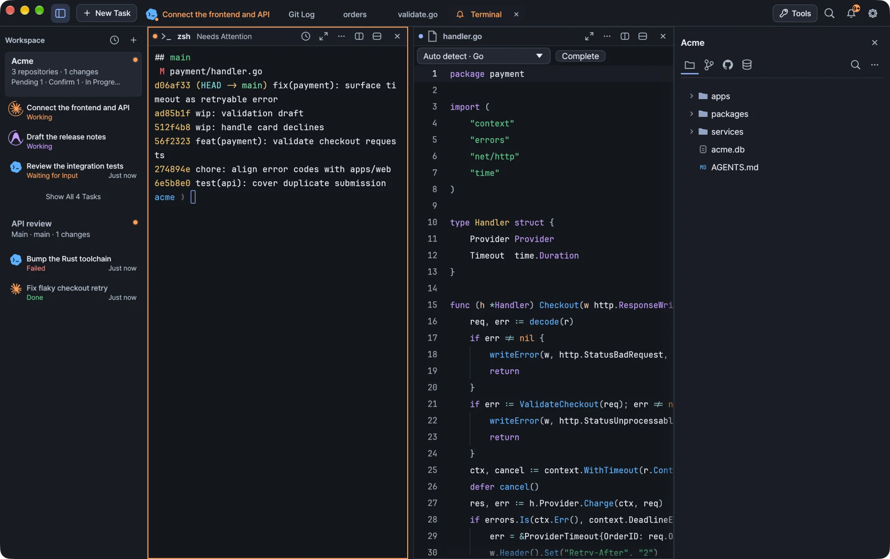

Shell integration, activity reporting, command history, completion, connection recovery and background sessions in Kiln's terminal.
Every Kiln task runs in a real terminal session owned by a local daemon. Shell integration adds command tracking, activity reporting and completion on top, and sessions keep running when you close the window.

Kiln running a demo workspace.
Shell integration
New default zsh sessions get shell integration automatically. It tracks command boundaries and the working directory, and it does not modify your .zshrc.
Automatic integration does not apply to custom launches with arguments, or to bash and fish. Shells that were already open may need a new session before new integration behavior applies. To turn integration off, set KILN_SHELL_INTEGRATION=0.
Attach an existing zsh session
In Settings, choose /bin/zsh as the default shell and open a new Kiln terminal. This sets up the integration files.
In the existing zsh, wait for any foreground task to finish, then run this at an idle prompt:
Starting zsh inside an existing terminal does not run Kiln's new-session setup on its own.
Activity and notifications
Kiln reads terminal notifications (OSC escape sequences) and explicit activity reports. Both are local terminal escape sequences and do not send your prompt to another service.
Report activity from a script or agent hook with kiln activity:
Send a notification with kiln notify. Run kiln activity --help and kiln notify --help for the syntax of your installed version. Shell integration also provides a kiln-agent-status running|waiting|done|failed|unknown function. Hook output has to reach the Kiln terminal for Kiln to receive the activity.
Kiln also recognizes the activity markers that Claude Code and Codex put in their terminal titles, so running activity appears without any hooks. Explicit waiting and failure reports take priority. Plain shells and agents that report nothing appear as open sessions instead of being marked complete. See Agents for the indicators and colors.
The notification center keeps recent notifications and links each one to its session. Reading a notification clears that session's attention state.
Command history
The daemon keeps your most recent commands in memory so you can review them and their output.
Limit
Value
Commands kept
The most recent 40
Output kept per command
The first 128 KiB
Survives a daemon restart or upgrade
No
History is a reconstructed text view of each command's output. It is not a raw terminal log and does not record every intermediate screen of a full-screen TUI. Without command-boundary integration, only the currently visible output is available.
If you edit a command from history, it runs only when you choose its explicit run action, and it runs in a new terminal.
Shell completion
In a newly opened, integrated zsh terminal, Kiln suggests cd paths and common Git, Docker, npm and Cargo subcommands as you type.
Key
Action
Ctrl+Space
Open suggestions, or look up installed command names
Arrow keys
Select a suggestion
Tab or Enter
Insert the selected suggestion
Esc
Close the menu
Inserting a suggestion never runs the command. When the menu is closed, zsh's own Tab completion works as usual.
To hide automatic suggestions, turn off command suggestions in Terminal settings. Ctrl+Space keeps working. Set KILN_COMPLETION_PREVIEW=0 in your shell to also stop the shell from producing preview data.
Completion does not read your shell history files, run commands to generate help, or send anything to a cloud service.
Completion supports zsh only. Bash, fish, SSH sessions, agent chats, full-screen applications and other shells keep their normal input behavior. Help for the integration is in the terminal's context menu.
Connection recovery
Kiln keeps the terminal connection separate from the shell or agent running inside it. If a panel loses its connection or stops responding, Kiln repairs the connection, redraws the screen and asks the CLI to redraw. It does not restart the agent, send a prompt or run /resume for you.
Panel shows
Meaning
Reconnecting
Kiln is repairing the connection, up to three attempts.
Connection stalled
The attempts failed. Choose Reconnect to try again.
Reconnect is also in the … menu of every running terminal panel, even when the connection looks healthy, and it resets that panel's retry budget. A quiet agent that is thinking or waiting for input is not treated as stalled.
During recovery, the session and its process keep running and the existing text stays on screen. Input is paused, so your typing never queues up behind a broken connection.
Note A CLI can hang internally while its connection stays healthy. Reconnect cannot fix that. Open another panel and use the CLI's own resume flow.
Sessions that outlive the window
Your terminals belong to the session daemon, not to the window. Close Kiln and its shells and agents keep running; reopen it to return to them. Updates keep running terminals too. A system reboot or explicitly stopping the daemon can end sessions.
macOS: the menu-bar icon opens a menu with Settings… and Stop Background Sessions…. Ending background sessions lists the live sessions and asks for confirmation, with Cancel as the default. It includes sessions in open workspaces, so unsaved shell or agent work can be lost.
Windows: the notification-area icon shows a session summary and a red dot when something needs attention or a notification is unread. Its menu has Open Kiln, Settings and Stop Background Sessions….
Warningkiln status shows the session daemon's state. Do not use shutdown-daemon to refresh the window: it ends your sessions.
Local network access on macOS
macOS 15 and later require permission for local-network connections. This can affect terminal commands such as kubectl get nodes, SSH, database connections and remote files when their servers are on a local network.
Open Kiln → Settings → Behavior.
Under Privacy → Local Network, choose Request Access.
If macOS shows a prompt, allow Kiln, then retry the command.
The gear button opens System Settings → Privacy & Security, where you can check Kiln under Local Network. Kiln cannot read or change the system's decision, and macOS may not show a new prompt if you already decided.
Tip Panels opened before an update keep their old process setup. If a local-network command fails there, open a new terminal panel and retry it.
Windows shells
Terminals start in PowerShell 7 when it is installed, otherwise in Windows PowerShell. Choose cmd.exe, Git Bash or a WSL distribution in Settings → Terminal.
PowerShell and cmd report commands, exit codes and the current location to Kiln. A custom prompt still sees the last command's status.
PowerShell keeps PSReadLine's completion (Tab, Ctrl+Space). Kiln's completion menu is zsh-only.
Closing a terminal ends its console programs. Window applications it started, such as a browser, keep running.
The pane is named after the newest console program running in the shell. Programs started from Git Bash are not followed.
Korean IME input works in terminals and the editor.
문서Kiln 사용하기
AI 터미널: 세션·셸·연결 복구
Kiln 터미널의 셸 통합, 활동 보고, 명령 기록, 자동 완성, 연결 복구, 백그라운드 세션을 설명합니다.
Kiln의 모든 작업은 로컬 데몬이 소유한 실제 터미널 세션에서 실행됩니다. 여기에 셸 통합이 명령 추적, 활동 보고, 자동 완성을 더하며, 창을 닫아도 세션은 계속 실행됩니다.
데모 워크스페이스로 실행한 Kiln
셸 통합
새로 여는 기본 zsh 세션에는 셸 통합이 자동으로 적용됩니다. 셸 통합은 명령의 시작과 끝, 작업 디렉터리를 추적하며 .zshrc는 수정하지 않습니다.
인수를 붙인 사용자 지정 실행이나 bash, fish에는 자동 통합이 적용되지 않습니다. 이미 열려 있던 셸에 새 통합 동작을 적용하려면 새 세션을 열어야 할 수 있습니다. 통합을 끄려면 KILN_SHELL_INTEGRATION=0을 설정하세요.
기존 zsh 세션 연결하기
설정에서 기본 셸을 /bin/zsh로 지정하고 새 Kiln 터미널을 엽니다. 이때 통합 파일이 만들어집니다.
기존 zsh에서 포그라운드 작업이 끝나기를 기다렸다가, 아무것도 실행 중이지 않은 프롬프트에서 다음 명령을 실행합니다.
알림은 kiln notify로 보냅니다. 설치된 버전의 문법은 kiln activity --help와 kiln notify --help로 확인하세요. 셸 통합은 kiln-agent-status running|waiting|done|failed|unknown 함수도 제공합니다. 훅의 출력이 Kiln 터미널까지 전달되어야 Kiln이 활동을 받을 수 있습니다.
Kiln은 Claude Code와 Codex가 터미널 제목에 넣는 활동 표시도 인식하므로, 훅이 없어도 실행 중 활동이 표시됩니다. 명시적인 대기·실패 보고가 있으면 그쪽이 우선합니다. 아무것도 보고하지 않는 일반 셸과 에이전트는 완료로 표시되지 않고 열린 세션으로 나타납니다. 표시와 색상은 에이전트를 참고하세요.
알림 센터는 최근 알림을 보관하고 각 알림을 해당 세션과 연결해 둡니다. 알림을 읽으면 그 세션의 확인 필요 상태가 풀립니다.
명령 기록
데몬은 최근 명령을 메모리에 보관하므로, 실행한 명령과 출력을 다시 살펴볼 수 있습니다.
한도
값
보관하는 명령 수
최근 40개
명령당 보관하는 출력
앞부분 128 KiB
데몬을 재시작하거나 업그레이드한 뒤에도 유지
아니요
기록은 각 명령의 출력을 재구성한 텍스트입니다. 원시 터미널 로그가 아니며, 전체 화면 TUI의 중간 화면을 모두 담지도 않습니다. 명령 경계를 추적하는 통합이 없으면 지금 화면에 보이는 출력만 볼 수 있습니다.
기록에서 명령을 편집하면, 명시적으로 실행을 선택해야만 실행되며 새 터미널에서 실행됩니다.
셸 자동 완성
새로 연 zsh 터미널에 셸 통합이 적용되어 있으면, 입력하는 동안 Kiln이 cd 경로와 자주 쓰는 Git, Docker, npm, Cargo 하위 명령을 추천합니다.
키
동작
Ctrl+Space
추천 목록 열기, 또는 설치된 명령 이름 찾기
화살표 키
추천 항목 선택
Tab 또는 Enter
선택한 추천 항목 삽입
Esc
메뉴 닫기
추천 항목을 삽입해도 명령은 실행되지 않습니다. 메뉴가 닫혀 있을 때는 zsh 자체의 Tab 자동 완성이 평소처럼 동작합니다.
자동 추천을 숨기려면 터미널 설정에서 명령어 입력 힌트를 끄세요. 그래도 Ctrl+Space는 계속 동작합니다. 셸이 미리보기 데이터를 아예 만들지 않게 하려면 셸에서 KILN_COMPLETION_PREVIEW=0도 설정하세요.
자동 완성은 셸 기록 파일을 읽지 않고, 도움말을 만들려고 명령을 실행하지도 않으며, 클라우드 서비스로 아무것도 보내지 않습니다.
자동 완성은 zsh에서만 동작합니다. Bash, fish, SSH 세션, 에이전트 채팅, 전체 화면 애플리케이션, 그 밖의 셸에서는 원래 입력 방식이 그대로 유지됩니다. 통합 관련 도움말은 터미널의 컨텍스트 메뉴에 있습니다.
연결 복구
Kiln은 터미널 연결과 그 안에서 실행 중인 셸이나 에이전트를 분리해서 관리합니다. 패널의 연결이 끊기거나 응답이 멈추면 Kiln은 연결을 복구하고, 화면을 다시 그리고, CLI에도 다시 그리기를 요청합니다. 에이전트를 재시작하거나, 프롬프트를 보내거나, /resume을 대신 실행하지는 않습니다.
패널 표시
의미
연결 복구 중
Kiln이 연결을 복구하고 있습니다. 최대 세 번 시도합니다.
연결 멈춤
시도가 모두 실패했습니다. 연결 다시 복구를 선택해 다시 시도하세요.
연결 다시 복구는 실행 중인 모든 터미널 패널의 … 메뉴에 있으며, 연결이 정상으로 보일 때도 쓸 수 있습니다. 이 메뉴를 선택하면 그 패널의 재시도 횟수가 초기화됩니다. 생각 중이거나 입력을 기다리느라 조용한 에이전트는 멈춘 것으로 보지 않습니다.
복구하는 동안에도 세션과 프로세스는 계속 실행되고, 기존 텍스트는 화면에 남아 있습니다. 입력은 잠시 멈추므로, 끊어진 연결 뒤로 입력이 쌓이지 않습니다.
참고 연결은 정상인데 CLI 내부가 멈출 수도 있습니다. 이때는 연결 다시 복구로 해결되지 않습니다. 다른 패널을 열고 CLI 자체의 재개 기능을 사용하세요.
창을 닫아도 유지되는 세션
터미널은 창이 아니라 세션 데몬에 속합니다. Kiln을 닫아도 셸과 에이전트는 계속 실행되고, 다시 열면 그 세션으로 돌아옵니다. 업데이트할 때도 실행 중인 터미널은 유지됩니다. 시스템을 재부팅하거나 데몬을 명시적으로 중지하면 세션이 종료될 수 있습니다.
macOS: 메뉴 막대 아이콘을 누르면 설정…과 백그라운드 세션 종료…가 있는 메뉴가 열립니다. 백그라운드 세션을 종료하려고 하면 실행 중인 세션 목록과 함께 확인 창이 뜨며, 기본 선택은 취소입니다. 열려 있는 워크스페이스의 세션도 함께 종료되므로, 저장하지 않은 셸이나 에이전트 작업을 잃을 수 있습니다.
Windows: 알림 영역 아이콘에는 세션 요약이 표시되고, 확인이 필요한 항목이나 읽지 않은 알림이 있으면 빨간 점이 붙습니다. 메뉴에는 Kiln 열기, 설정, 백그라운드 세션 종료…가 있습니다.
주의kiln status는 세션 데몬의 상태를 보여 줍니다. 창을 새로 고치려고 shutdown-daemon을 실행하지 마세요. 세션이 종료됩니다.
macOS의 로컬 네트워크 접근
macOS 15 이상에서는 로컬 네트워크에 연결하려면 권한이 필요합니다. 그래서 서버가 로컬 네트워크에 있으면 kubectl get nodes, SSH, 데이터베이스 연결, 원격 파일 같은 터미널 명령이 영향을 받을 수 있습니다.
Kiln → 설정 → 동작을 엽니다.
개인정보 보호 → 로컬 네트워크에서 접근 요청을 선택합니다.
macOS가 확인 창을 띄우면 Kiln을 허용하고 명령을 다시 실행합니다.
톱니바퀴 버튼을 누르면 시스템 설정 → 개인정보 보호 및 보안이 열리고, 로컬 네트워크 항목에서 Kiln을 확인할 수 있습니다. Kiln은 시스템에서 내린 결정을 읽거나 바꿀 수 없으며, 이미 허용 여부를 정했다면 macOS가 확인 창을 다시 띄우지 않을 수 있습니다.
팁 업데이트 전에 연 패널은 이전 프로세스 설정을 그대로 씁니다. 그 패널에서 로컬 네트워크 명령이 실패하면 새 터미널 패널을 열고 다시 실행하세요.
Windows 셸
터미널은 PowerShell 7이 설치되어 있으면 PowerShell 7로, 없으면 Windows PowerShell로 시작합니다. 설정 → 터미널에서 cmd.exe, Git Bash, WSL 배포판을 고를 수 있습니다.
PowerShell과 cmd는 명령, 종료 코드, 현재 위치를 Kiln에 보고합니다. 사용자 지정 프롬프트에서도 마지막 명령의 상태를 그대로 받을 수 있습니다.
PowerShell에서는 PSReadLine의 자동 완성(Tab, Ctrl+Space)을 그대로 씁니다. Kiln의 자동 완성 메뉴는 zsh 전용입니다.
터미널을 닫으면 그 안의 콘솔 프로그램이 종료됩니다. 터미널에서 띄운 브라우저 같은 창 애플리케이션은 계속 실행됩니다.
패널 이름은 셸에서 실행 중인 가장 최근 콘솔 프로그램의 이름을 따릅니다. Git Bash에서 시작한 프로그램은 추적하지 않습니다.
 Kiln
Kiln